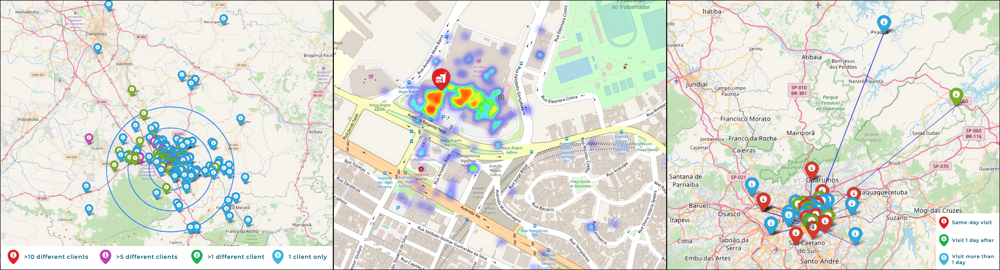

Projects

COVID-19 Risk Analysis in Metallurgical Plants
Developing a data-driven dashboard to assist the medical team in identifying high-risk sites.

Customer Behavior with Apriori Analysis
Analyzing customer purchase patterns using the Apriori algorithm to identify frequent store pairs.

Geospatial Data Science to Enhance Customer Engagement
Using location data to determine user behavior and engagement for shopping mall visits and promotional campaigns.

Predictive Maintenance for Mining Trains
Developing predictive maintenance models to reduce mining train failures on-track.

Persona
Persona.

Recommendation
Recommendation.

Customer Segmentation via RFM Analysis
Leveraging Recency, Frequency, and Monetary (RFM) value analyses to segment customers.

NLP for Actionable Insights from Customer Reviews
Analyzing user feedback from online reviews to generate actionable insights and identify areas for improvement.

Unraveling Consumer Engagement with Graph Analysis
Leveraging graphs to decipher user engagement patterns within a multi-functional super app.